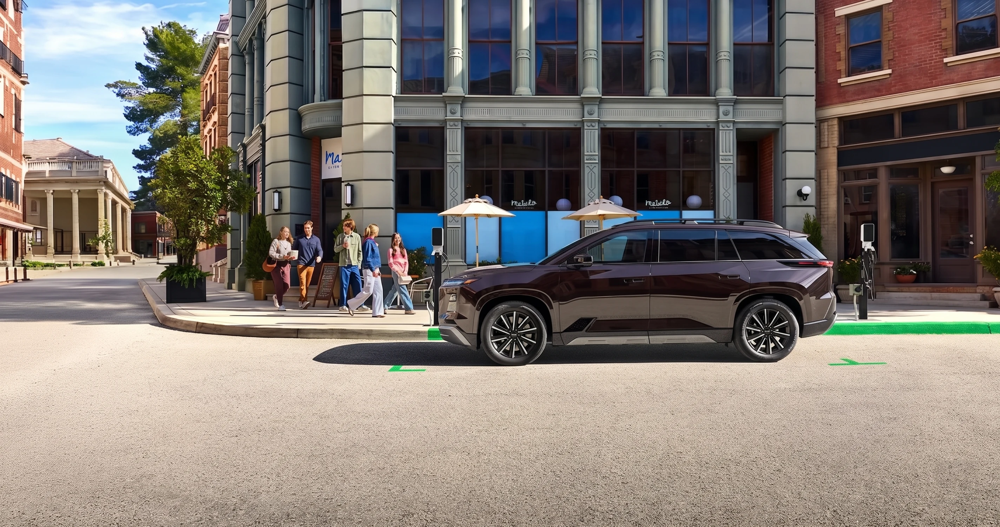
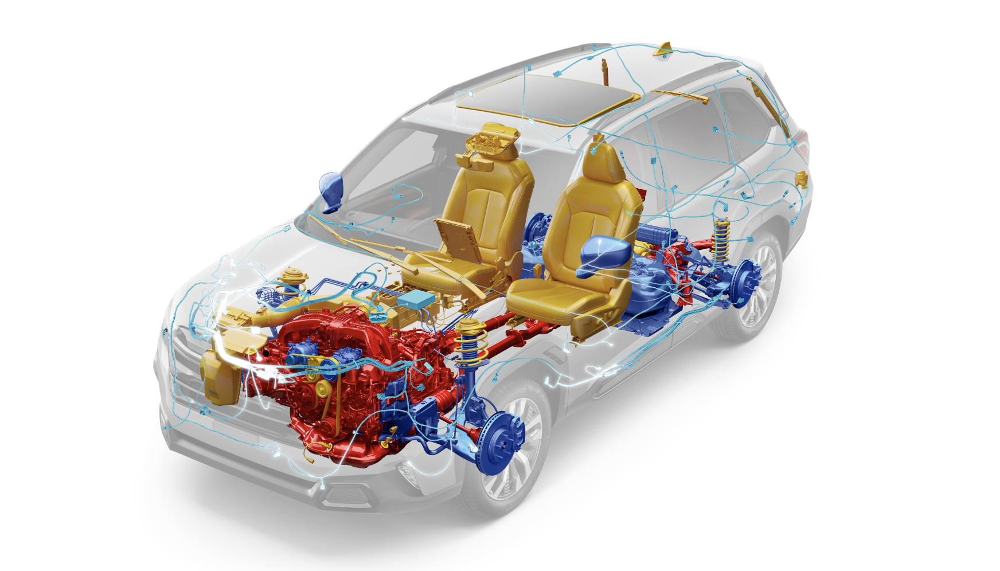
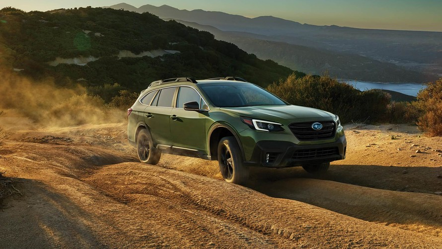
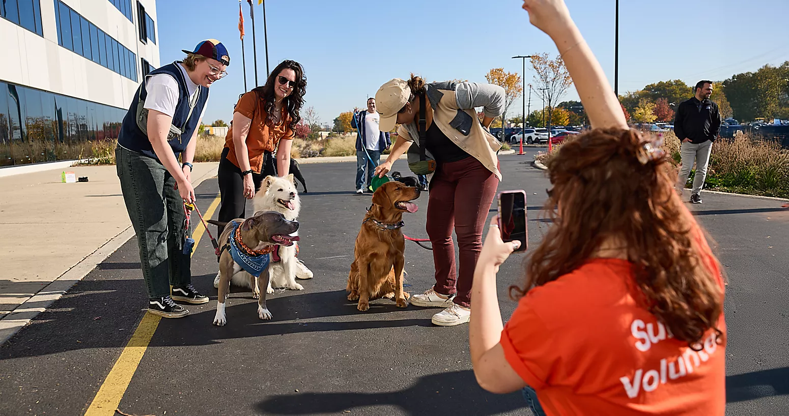

$34,995Best seller
Outback Premium
2.5L Boxer, 180 hp, 27 MPG combined. 8.7" clearance. EyeSight standard. IIHS TSP+ for 2026.
See inventoryTwenty years ago, the Subaru argument was easy in northern Arizona. With the redesigned RAV4 hybrid, the updated CR-V, and the Mazda CX-50 finally this good, does Subaru still win? After thirty years of selling these cars to the people who actually drive these roads — yes. For a reason that has almost nothing to do with the spec sheet.

FINDLAY SUBARU PRESCOTT · ED. 26Everyone else sold all-wheel drive as an option. We sold it as the way the car was built. The argument wrote itself.
It's 2026, and the argument is harder.
Toyota redesigned the RAV4 from the ground up. It's now hybrid-only. It returns over 40 miles per gallon in trims that will tow 3,500 pounds. Honda overhauled the CR-V's AWD logic this year. Mazda's CX-50 Meridian shows up at the trailhead on all-terrain tires with 8.6 inches of clearance, looking like it means it.
So here's the real question for someone shopping in Yavapai County. With the alternatives finally this good, does Subaru still win?
After thirty years of selling these cars to the people who actually drive these roads, my answer is yes. But for a reason that has almost nothing to do with the spec sheet.
Most all-wheel-drive systems on the road today are reactive — front-wheel drive until a sensor sees slip, then power gets sent rearward. Subaru's Symmetrical AWD sends power to all four wheels at once, all the time, before you ever ask for it.
Most all-wheel-drive systems on the road today are reactive.
The car drives the front wheels. A sensor watches for slip. Only then does power get sent rearward.
On a dry highway, you'd never know the difference. On the first fifty feet of a wet Williamson Valley dirt road, you would.
Subaru's Symmetrical All-Wheel Drive is built around a longitudinally-mounted boxer engine sitting low and centered. Symmetric driveshafts feed all four wheels at once.
There's no waiting. Power goes everywhere, all the time, before you ever ask for it.
That architectural difference is where the Subaru argument lives. Everything else is downstream of it — the IIHS scores, the resale value, the company that actually shows up to local Share the Love events.
The 2026 RAV4 hybrid is a particularly interesting case. Toyota dropped the gas powertrain entirely. The hybrid AWD now drives the rear wheels with an electric motor. There is no driveshaft connecting front to rear.
It works beautifully on pavement. It saves real money at the pump. But on a wet wash crossing, you're asking a motor to spin up rather than asking a driveshaft to deliver power that's already there.
That's a different kind of contract.
I won't pretend the difference matters every day. It doesn't. It matters on the days you remember.

On the dry pavement of AZ-69, you'll never know the difference. On a wet wash crossing on the Senator Highway after a July thunderstorm, you will. That's the difference between a driveshaft that already has power at the rear axle and a system that has to detect slip first.
For a Prescott family of four or five, the 2026 Outback Premium at $34,995 is the answer. For real time on dirt, step up to the Outback Wilderness at $44,995. The Forester ($29,995) and Crosstrek Wilderness round out the lineup; the Ascent ($40,795) seats seven or eight.
If you're a Prescott family of four or five and you want one vehicle to do everything, buy the 2026 Outback.
The seventh-generation redesign is the first Outback in thirty years that isn't built on the Legacy bones. It picks up two more inches of height, a flatter roof, and 80.5 cubic feet of cargo with the seats folded.
The 2026 Outback Premium starts at $34,995 MSRP, excluding destination. The standard 2.5L Boxer makes 180 horsepower and returns 27 MPG combined. Ground clearance: 8.7 inches. EyeSight® driver assist is standard on every trim. IIHS gave the 2026 Outback a Top Safety Pick+ under the tougher 2026 criteria.
If your family commutes into Prescott Valley and runs to the Bradshaws on weekends, this is the answer. We sell more of them, by a wide margin, than anything else in the showroom.
If you spend real time on dirt — Senator Highway, the Verde Valley back routes, the Mingus Mountain fire roads — step up to the Outback Wilderness at $44,995.
You get 9.5 inches of clearance. X-MODE® Dual-Mode with Hill Descent Control. Bridgestone Dueler all-terrain tires. A 3,500-pound tow rating.
New for 2026: electronically controlled dampers. They make the long stretches of washboard between here and Cottonwood feel like a different car.
If you don't need that much SUV, the 2026 Forester at $29,995 is the most direct upgrade we sell to anyone trading out of a Toyota RAV4 or Honda CR-V. Same standard AWD. More upright cabin. The Forester Wilderness trim gives you 9.3 inches of clearance and a 3,500-pound tow rating.
It's also Subaru's best-selling vehicle nationally — 20,412 units in March 2026 alone.
If you don't need a full-size SUV at all, the Crosstrek is the Subaru we'd want our kid in.
Parks downtown on Gurley Street. Holds its own at the Granite Mountain trailheads. The Wilderness trim gives you 9.3 inches of clearance, dual-function X-MODE, and a 3,500-pound tow rating in a package small enough you don't think about it.
If your family outgrew five seats, that's the Ascent. Seven or eight passengers. 5,000 pounds of tow. 260 horsepower from the 2.4T. Starts at $40,795. Third-row legroom of 31.7 inches that fits an actual teenager.
2.5L Boxer, 180 hp, 27 MPG combined. 8.7" clearance. EyeSight standard. IIHS TSP+ for 2026.
See inventory9.5" clearance. X-MODE Dual-Mode. Bridgestone Dueler A/T tires. 3,500 lb tow. New for 2026: electronic dampers.
See inventoryMost direct upgrade from a RAV4 or CR-V. Standard AWD. Wilderness trim: 9.3" clearance, 3,500 lb tow.
See inventory9.3" clearance. Dual-function X-MODE. 3,500 lb tow. Parks downtown; holds its own at Granite Mountain.
See inventory7 or 8 passengers. 5,000 lb tow. 260 hp from the 2.4T. 31.7" of third-row legroom that fits an actual teenager.
See inventory236 Subarus on the lot at last count, across the Outback, Forester, Crosstrek, Ascent, and Impreza lines.
See all newThe 2026 Toyota RAV4 hybrid is a serious commuter at 38–42 MPG combined AWD. The 2026 Honda CR-V starts at $30,920 with improved AWD logic. The 2026 Mazda CX-50 Meridian is a credible Outback Wilderness alternative with 8.6 inches of clearance.
I'm a Subaru dealer. I'm also a person who'd rather you buy the right car than the wrong Subaru.
The 2026 Toyota RAV4 is a serious vehicle.
Hybrid-only. Up to 47 MPG city in the most efficient trims. 38–42 MPG combined for AWD models. Most AWD versions tow 3,500 pounds.
IIHS hasn't completed testing of the redesigned model, so it doesn't currently hold a Top Safety Pick. That may change.
If you commute long miles and don't drive much dirt, the math on the RAV4 is hard to argue with.
The 2026 Honda CR-V starts at $30,920.
Honda updated the AWD logic this year to allow up to a 50/50 front-rear split when conditions demand it. That's real progress.
The catch: AWD is optional on most trims rather than standard. And the 2026 CR-V picked up a "Poor" rating in the IIHS moderate overlap front test, keeping it out of TSP territory for now.
Worth knowing.

The 2026 Mazda CX-50 is the one we have the most respect for.
The Meridian Edition at 8.6 inches of clearance with all-terrain tires is a credible Outback Wilderness alternative on paper. Mazda's interior quality is genuinely class-leading.
Mazda placed second among mass-market brands in J.D. Power's 2025 Vehicle Dependability Study, behind Buick and ahead of Toyota. The 2026 CX-50 holds a Top Safety Pick+.
If your trail use is light and your priority is how the cabin feels, drive one before you decide.
Subaru leads on AWD architecture, ground clearance, and Wilderness-trim tow rating. RAV4 Hybrid leads on combined MPG. CX-50 Turbo matches Subaru on tow. Honda CR-V isn't currently a Top Safety Pick.
| Spec | Outback2026 · Subaru | RAV4 Hybrid2026 · Toyota | CR-V2026 · Honda | CX-502026 · Mazda |
|---|---|---|---|---|
| AWD architecture | Symmetrical (continuous) | Rear electric motor | Reactive (FWD base) | i-Activ (reactive) |
| Ground clearance | 8.7" (9.5" Wilderness) | 8.1" (8.5" Woodland) | 7.8" (8.2" AWD) | 8.3" to 8.6" |
| Tow rating | 2,700 lb (3,500 max) | 1,750 lb (3,500 max) | 1,500 lb | 3,500 lb (Turbo) |
| Combined MPG | 27 (24 Wilderness) | 38 to 42 (AWD) | 29 (AWD) | 26 (2.5L AWD) |
| Starting MSRP | $34,995 | ~$31,900 | $30,920 | $29,900 |
| IIHS 2026 | Top Safety Pick+ | Not yet rated | Not TSP | TSP+ (2025–26) |
Specs verified May 2026 against Subaru, Toyota, Honda, and Mazda. Re-verify within 30 days of publication.
Full-coverage car insurance in Arizona averages $2,644 per year. Subaru's IIHS scores typically qualify owners for a safety-feature discount. Two things the spec sheet doesn't warn you about in Prescott: summers eat batteries, and dust clogs cabin filters about twice as fast as the booklet suggests.
Two numbers worth knowing before you sign anything.
Full-coverage car insurance in Arizona averages $2,644 per year, slightly under the national average per Bankrate's most recent analysis. Subaru's IIHS scores and standard EyeSight typically qualify owners for a safety-feature discount with most major Arizona carriers.
Worth a phone call to your agent.
Vehicle License Tax in Arizona is calculated on taxable value and decreases each year, set by the Arizona Department of Transportation Motor Vehicle Division. Our finance team can run an exact figure for any vehicle on the lot.
Two things the spec sheet won't warn you about.
Prescott summers eat batteries faster than the warranty assumes. And dust here clogs cabin air filters about twice as fast as the booklet suggests.
Both fixes are cheap. Plan for them.
Findlay Subaru Prescott has been at 3230 Willow Creek Road since the Findlay family took over the store in 2017. Through Share the Love alone, our customers have directed over $271,000 to local nonprofits. Our sales team is non-commissioned — that's an actual policy, not a tagline.
Findlay Subaru Prescott has been at 3230 Willow Creek Road since the Findlay family took over the store in 2017.
We're the local Subaru retailer for Yavapai County, the Quad Cities, and most of the Verde Valley.
Through the Subaru Share the Love® program alone, our customers have directed over $271,000 to local nonprofits since 2017. Yavapai Humane Society. Horses with Heart. Yavapai County Search and Rescue. The Launch Pad Teen Center. U.S. Vets. Dogtree Pines Senior Sanctuary.
We don't think of it as marketing. As General Manager Jason Jenkins told Quad Cities Business News when our customers raised $9,200 for the Prescott Police K-9 Unit:
"We love being a part of the local community. And what better program to support than our local law enforcement K-9 Unit? At Findlay Subaru Prescott, we love dogs, and we truly appreciate our local law enforcement and all they do to protect us and our community." Jason Jenkins · General Manager · Quad Cities Business News

Our sales team is non-commissioned. That's an actual policy, not a tagline. Whoever's helping you is paid the same regardless of which Subaru you buy or whether you buy one at all.
That changes the conversation in ways you'll notice within the first ten minutes.
Current inventory is at /inventory/new — 236 Subarus on the lot at last count. To talk it through with someone who's actually driven these roads in every model we sell, call (928) 771-6900 or come by the showroom.
We're a quarter mile south of the 89A junction on Willow Creek, across from Findlay Toyota Prescott.
The argument's harder than it used to be. We think it still goes Subaru's way.
Drive a few and tell us if we're wrong.
The 2026 Outback (Premium from $34,995, Wilderness from $44,995), Forester (from $29,995, Wilderness available), Crosstrek (Wilderness from the mid-$30s), and three-row Ascent (from $40,795). Reviewed and on the floor at 3230 Willow Creek Road.
Non-commissioned sales team. Whoever's helping you is paid the same regardless of which Subaru you buy or whether you buy one at all. That changes the conversation in ways you'll notice within the first ten minutes.
Quarter mile south of the 89A junction on Willow Creek, across from Findlay Toyota Prescott. Browse new inventory any time.
Sales: (928) 771-6900.
Service: (928) 771-6904.
Parts: (928) 771-6950.
For a Prescott family of four or five who wants one vehicle to do everything, the 2026 Subaru Outback Premium at $34,995 MSRP is the answer. Standard 2.5L Boxer, 180 hp, 27 MPG combined, 8.7 inches of ground clearance, EyeSight standard on every trim, and IIHS Top Safety Pick+ for 2026.
For real time on dirt — Senator Highway, Verde Valley back routes, Mingus Mountain fire roads — the Outback Wilderness at $44,995 adds 9.5 inches of clearance, X-MODE Dual-Mode, Bridgestone Dueler all-terrain tires, and a 3,500-pound tow rating.
Most all-wheel-drive systems on the road today are reactive. The car drives the front wheels. A sensor watches for slip. Only then does power get sent rearward.
Subaru's Symmetrical All-Wheel Drive is built around a longitudinally-mounted boxer engine sitting low and centered, with symmetric driveshafts feeding all four wheels at once. There's no waiting — power goes everywhere, all the time, before you ever ask for it. On a dry highway you'd never know the difference. On the first fifty feet of a wet Williamson Valley dirt road, you would.
Toyota dropped the gas powertrain entirely for 2026. The hybrid AWD now drives the rear wheels with an electric motor — there is no driveshaft connecting front to rear. It works beautifully on pavement and saves real money at the pump (38–42 MPG combined for AWD models). On a wet wash crossing, you're asking a motor to spin up rather than asking a driveshaft to deliver power that's already there. A different kind of contract.
The 2026 CR-V starts at $30,920. Honda updated the AWD logic this year to allow up to a 50/50 front-rear split when conditions demand it — real progress.
Two catches: AWD is optional on most trims rather than standard, and the 2026 CR-V picked up a "Poor" rating in the IIHS moderate overlap front test, keeping it out of Top Safety Pick territory for now.
Yes — it's the cross-shop we have the most respect for. The CX-50 Meridian Edition runs 8.6 inches of clearance with all-terrain tires, and Mazda's interior quality is genuinely class-leading. Mazda placed second among mass-market brands in J.D. Power's 2025 Vehicle Dependability Study, behind Buick and ahead of Toyota. The 2026 CX-50 holds a Top Safety Pick+. If your trail use is light and your priority is how the cabin feels, drive one before you decide.
The 2026 Forester at $29,995 is the most direct upgrade we sell to anyone trading out of a RAV4 or CR-V — same standard AWD, more upright cabin. The Wilderness trim gets 9.3 inches of clearance and a 3,500-pound tow rating. It's also Subaru's best-selling vehicle nationally — 20,412 units in March 2026 alone.
The Crosstrek Wilderness gives you 9.3 inches of clearance and a 3,500-pound tow rating in a package small enough to park downtown on Gurley Street. The Ascent at $40,795 seats seven or eight, tows 5,000 pounds, makes 260 hp from the 2.4T, and has 31.7 inches of third-row legroom.
Full-coverage car insurance in Arizona averages $2,644 per year, slightly under the national average per Bankrate's most recent analysis. Subaru's IIHS scores and standard EyeSight typically qualify owners for a safety-feature discount with most major Arizona carriers — worth a phone call to your agent. Vehicle License Tax in Arizona is calculated on taxable value and decreases each year; our finance team can run an exact figure for any vehicle on the lot.
We've been at 3230 Willow Creek Road since the Findlay family took over the store in 2017, and we're the local Subaru retailer for Yavapai County, the Quad Cities, and most of the Verde Valley. Through Subaru Share the Love alone, our customers have directed over $271,000 to local nonprofits since 2017.
Our sales team is non-commissioned. That's an actual policy, not a tagline. Whoever's helping you is paid the same regardless of which Subaru you buy or whether you buy one at all. Call (928) 771-6900 or come by the showroom — quarter mile south of the 89A junction on Willow Creek, across from Findlay Toyota Prescott.
By Findlay Subaru Prescott, with review by General Manager Jason Jenkins · drafted May 7, 2026 · target publish May 18, 2026.
Researched and drafted with AI assistance. Fact-checked against primary sources — Subaru of America, Toyota, Honda, Mazda, IIHS, J.D. Power, fueleconomy.gov, Bankrate, and the Arizona DOT Motor Vehicle Division. Competitor specs verified at manufacturer sources; re-verify within 30 days of publication. Jason Jenkins quote sourced from Quad Cities Business News coverage of the dealership's October 2023 K-9 Unit fundraiser.
All 2026 model specs reflect manufacturer-published values as of May 2026. Local observations reflect Findlay Subaru Prescott showroom and service department experience in the Yavapai region.
The argument's harder than it used to be. We think it still goes Subaru's way. 236 on the lot at last count.